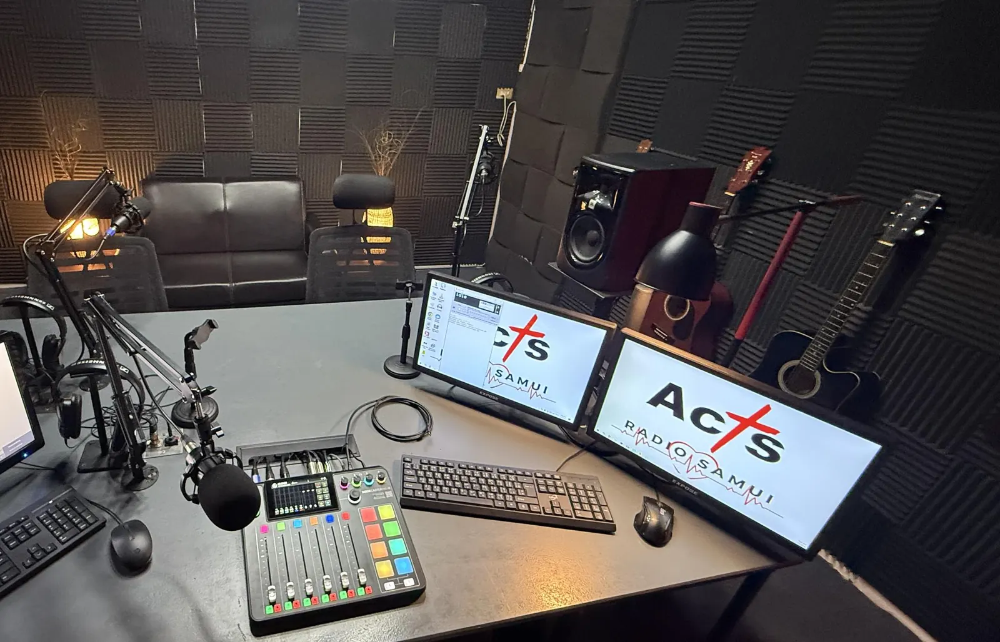

Acts Radio Samui แบ่งปันข่าวประเสริฐแก่ผู้ฟังในทุกช่วงของชีวิตความเชื่อ ตั้งแต่ผู้ที่เพิ่งได้รู้จักพระเยซูเป็นครั้งแรก ไปจนถึงผู้ที่ต้องการเติบโตในความสัมพันธ์กับพระองค์ให้ลึกซึ้งยิ่งขึ้น ผ่านเพลงนมัสการ คำสอนจากพระคัมภีร์ และการอธิษฐาน ทางสถานีมอบความหวัง กำลังใจ และพระปัญญาของพระเจ้าสำหรับชีวิตประจำวัน ครอบครัว และความสัมพันธ์
นอกจากนี้ ทางสถานียังมุ่งหวังที่จะนำคริสเตียนจากคริสตจักรและพันธกิจต่าง ๆ มารวมกัน ผ่านการสามัคคีธรรม การพูดคุย และคำพยานถึงสิ่งที่พระเจ้ากำลังทรงกระทำผ่านประชากรของพระองค์
Acts Radio Samui ก่อตั้งโดยคริสตจักรเกาะสมุยอินเตอร์เนชั่นแนลเมื่อเดือนตุลาคม 2569 พร้อมนิมิตที่ขยายกว้างขึ้นในการเข้าถึงผู้ฟังทั่วประเทศไทยและนานาประเทศ